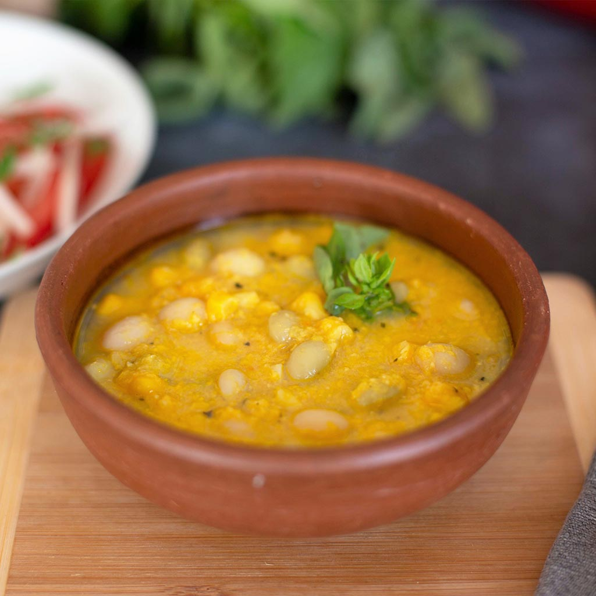

Porotos Granados
Back to main page

Description
Porotos granados is a traditional Chilean countryside stew made mainly
of ripe Cranberry beans,[1] maize kernels and squash.
Other common ingredients are onions, and herbs such as cumin, basil
and oregano. Pumpkin is also used in some recipes.
It is considered a summer stew, because that is when the maize and
summer squash are harvested in central and southern Chile.
Recipe :P
Ingredients
- 2 tablespoons of vegetable oil
- 1 small onion, chopped into squares
- 1 clove of minced garlic
- Salt, paprika, pepper, and cumin to taste
- 1 1/2 kg (3.3 lb) of cranberry beans
- 2 corns
- 1/4 kg (about 1/2 lb) of pumpkin (or squash)
- 8 basil leaves
Steps!
- Thrash the beans (i.e. remove them from their husks), chop the corns, wash and chop the pumpkin into medium-sized cubes.
- In a large pot, cook with enough hot water to cover the beans and chopped pumpkin, add a little salt and about 4 basil leaves. Cook over medium heat for about 30 minutes.
- Meanwhile make a stir-fry sauce in a pan with oil, onion chopped in squares, garlic, chopped basil, and the remaining spices. It takes about 7 minutes, more or less.
- Meanwhile add the corn to the mixture of beans, and cook for about 5 more minutes.
- Then add the stir-fry sauce that was prepared, stir well and cook for about 3 more minutes.
- Let it stand and serve with basil on top or with “color”, which is basically red pepper powder with some lard or melted butter.
- ENJOY!! :P